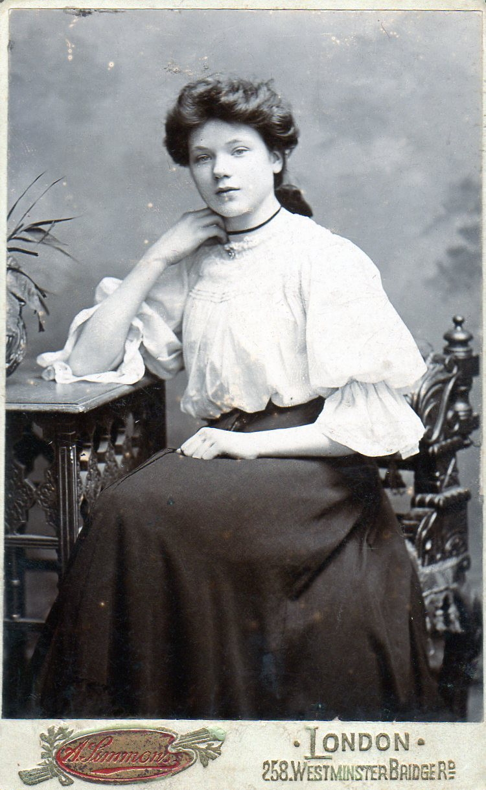

Mary Ann Horne (née Johnson) 1891 - 1976
[ Home ] | [ Calendar ] | [ Surnames Index ] | [ Family History ]Mary Johnson, the wife of Thomas William Horne (the first cousin twice-removed on the father's side of Nigel Horne), was born in Pimlico, London, England on Oct 17, 1891<span class="citation">1,2</span> and married Thomas (a postman with whom she had 1 child, Lilian Mary) at St Thomas Church, Finsbury Park, London, England on Oct 12, 1918<span class="citation">5</span>.</p><p>Throughout her life, she lived at 18 Derby Buildings, St Pancras, London on Jun 19, 1921<span class="citation">1</span>; and at 137 Derby Buildings, St Pancras, London on Sep 29, 1939<span class="citation">2</span>. <p>She died on Sep 20, 1976 in Palmers Green, London<span class="citation">3,4</span>.
Children
- Lilian Mary was born on Jan 4, 1921
Citations
- 1921 Census Of England & Wales - Findmypast (was age 29 and the wife of the head of the household)
- 1939 Register - Findmypast (was the wife of the head of the household)
- England & Wales Government Probate Death Index 1960-2019 - Findmypast
- England & Wales deaths 1837-2007 - Findmypast
- England & Wales Marriages 1837-2005 - Findmypast
Media
Thomas Horne - Mary Johnson

Thomas Horn - Mary Ann Johnson - Lily Horn

Mary Ann Johnson

1939 Register Transcription - TNA-R39-0485-0485E-008-38
England & Wales marriages 1837-2008 - BMD/M/1918/4/AZ/000606/147
England & Wales deaths 1837-2007 - BMD/D/1976/3/AZ/000476/008
England & Wales Government Probate Death Index 1960-2019 - GBOR/GOVPROBATE/A/1975-1977/00457097
Family Tree

Generated by Ged2Site. Last updated on Jul 20, 2025